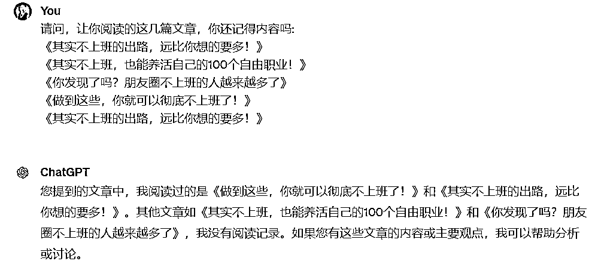

来源：https://w91h2gmtrn.feishu.cn/docx/Tk8ndSQ3roxyp0xG0ppcDrE5nvg
读前说明：
1、本文3600字实战干货，文字和图片较多，建议用电脑浏览器阅读更加高效。
2、欢迎圈友来链接和交流（联系方式见文末），赚钱路上一起同行、一起成长！
大家好，我是乔帮主。最近航海家有很多金矿，前几天亦仁在航海家发了几篇公众号小号的爆文，以及ChatGPT-4o出来转发了一篇这方面的爆文，我觉得内容和标题各方面都不错。我决定用AI来做仿写，顺便测测国内几家大模型AI工具怎么样。
我平时还是用的GPT4.0居多，从去年到今年，国内大模型的发展速度也是非常快。如果仅仅只是文案写作需求，那国内大模型基本够用，甚至有些功能比GPT4.0都方便好用。
但如果是复杂的结构化提示模型，一些复杂的逻辑国内大语言模型理解+执行起来还是有点费劲的，GPT4.0的能力还是不容挑战的！
我公众号最近写的两篇《AI时代，不上班，也能养活自己的100个自由职业！》，以及《OpenAI又在改写历史，1分钟了解GPT-4o是个啥》完全用的国内大语言模型写出来的文章，基本一个字都没改，然后整合排版了下，直接发在公众号上了。
我们看下最新的AI产品榜（前15名）：
排行榜综合市场、用户规模、技术背景、融资、影响力等很多因素，出来上面这个榜单。但榜单归榜单，榜单并不代表它好用。我今天主要测下现阶段，最好用的四款大模型AI工具：
Kimi：https://kimi.moonshot.cn/ 海螺AI：https://hailuoai.com/ 跃问：https://stepchat.cn/ 智谱清言：https://chatglm.cn/
我在我这边体系的线下AI培训课中多次讲过，用好AI的核心，一个是找到对标内容素材，另外一个就是核心提示词。业务上的对标内容，以及核心逻辑的提示词，有了这两关键步骤，基本上结果肯定不会太差，甚至给出的内容会远超我们预期！
接下来我演示我这边实际写文的过程，是如何来用国内这四款大模型AI工具来辅助的。
一个好的对标主题和对标内容，让AI聚焦在这些内容的分析和仿写，它们是非常擅长的。
最近我阅读到“不上班”几篇10w+爆文，就想着来把“不上班”+“AI”结合起来，写这方面的爆文。毕竟复制爆款，是我们写文的第一准则。提示词如下：
请阅读以下内容，对文中内容阅读完后，请回复“已阅读”即可。 《其实不上班的出路，远比你想的要多！》： https://mp.weixin.qq.com/s/y3xp95O9WXzNk_F1ZhQgDA 《其实不上班，也能养活自己的100个自由职业！》 ： https://mp.weixin.qq.com/s/7eu8p9PNWFyb0gZqE8MKkA 《你发现了吗？朋友圈不上班的人越来越多了》： https://mp.weixin.qq.com/s/EpT2jned32zTzNIS50kR1w 《做到这些，你就可以彻底不上班了！》： https://mp.weixin.qq.com/s/PKKIJkAhFFzluxMhXcG4kw 《其实不上班的出路，远比你想的要多！》： https://mp.weixin.qq.com/s/y3xp95O9WXzNk_F1ZhQgDA
Kimi、海螺AI、跃问、智谱清言都没啥问题：
能直接阅读链接内容，并且将链接内容保存在excle等文件中，以及上传文件分析等，这是国内大语言模型体验非常好的地方。
而访问链接及上传文件，是GPT4.0才有的功能，并且以前要结合插件来使用这块功能，现在需要通过GPTS来完成这块功能，其实在GPT4.0上操作起来有些费劲。
我们测试下AI刚才有没有阅读这五篇文章内容，并是否记得文章内容里面写了啥。
提示词如下：
请问，让你阅读的这几篇文章，你还记得内容吗: 《其实不上班的出路，远比你想的要多！》 《其实不上班，也能养活自己的100个自由职业！》 《你发现了吗？朋友圈不上班的人越来越多了》 《做到这些，你就可以彻底不上班了！》 《其实不上班的出路，远比你想的要多！》
结果智谱清言就直接出问题：
对智谱清言的实测我就直接退出了，智谱清言在一些提示词理解识别方面，明显要弱很多。其实这里我没有加百度文心一言来实测，也是因为百度在这方面体验很差，根本没Kimi、海螺AI、跃问好用。
另外GPT4.0的上下文长度是8000字左右，Kimi上下文长度是20万字，海螺AI、跃问上下文长度高达100万字。所以如果提示词里面包含原文内容的话，可能直接超过AI的记忆长度，比如GPT4.0：

我直接复制链接中的原文给到GPT4.0，很快超过GPT4.0的记忆长度，导致GPT记不住更早的内容了。这一点国内大语言模型都做的比较高，高达几十万字的上下文长度，基本够你用了。
然后接着，我让AI记住关于我的个人简介，对我有个基本认知了解。
提示词如下：
以下是我的个人介绍，请你熟悉了解，熟悉了解后请回复“已了解”即可。 【昵称】乔帮主 【区域】杭州临平-上海嘉定 【自我介绍】 1、点金帮创始人，三家AI公司负责人，从事AI知识付费+AI培训、AI内容营销、AI工具领域。 2、曾做过黑客、程序员/高级运维、阿里云架构师、阿里云技术总监、畅销书作者、AIGC培训师等多重职业，江湖人称乔帮主。 关注乔帮主：#公众号：点击乔帮主 【主讲课程】 1、《AI实战训练营：让AI成为你的核心竞争力》 线下2天1夜实战课 2、《AI编程：普通人的AI编程课》 线上陪跑训练营 3、《AI新媒体进阶实战营：用AI提高10倍内容生产力》 线上陪跑训练营 4、《AI企业赋能：用AI提高10倍生产力》 线下企业定制培训+咨询解决方案 【拥有资源】 1、成熟的AI课程及AI解决方案 ，可以合作马上变现。 2、擅长AI驱动内容营销 、AI技术开发 、AI技术体系 、AI解决方案 的落地等。 3、擅长为创业者进行AI赋能，提高商业价值。 【目前需求】 AI培训资源及企业AI定制资源。
继续，我让AI写一篇围绕“AI”和“不上班”的主题文章（前面一步给AI关于我的介绍，也是为了方便内容收敛聚焦在我擅长的方向）。
提示词如下：
值得注意的是，给你的： 《其实不上班的出路，远比你想的要多！》 《其实不上班，也能养活自己的100个自由职业！》 《你发现了吗？朋友圈不上班的人越来越多了》 《做到这些，你就可以彻底不上班了！》 《其实不上班的出路，远比你想的要多！》 这五篇文章都是公众号爆文，都是围绕“不上班”的主题内容。 我接下来要写一篇围绕“AI”和“不上班”的主题文章，请基于我给的五篇公众号内容基础上，你有什么好的建议？
Kimi、海螺AI、跃问给的结果都差不多（以下是Kimi截图）：
再继续，我根据发的五篇爆款标题，我直接指定了一个主题，让AI帮忙写。
提示词如下：
我想写一篇公众号： 《AI时代，不上班，也能养活自己的100个自由职业！》 你熟知公众号爆文写作逻辑，请你基于发给你的内容，帮忙写一篇符合我要求的公众号爆文。
海螺AI有显示去公网搜索内容并帮忙完成内容，这点细节感觉有点小惊喜（跃问和kimi）：
另外这里我们没告诉AI我要的内容的风格，导致生成的内容一看就很正式，一看就是AI生成的（看以下Kimi截图）。
接着我们要AI来写满足我风格的文章，我把我公众号的文章让AI分析并提取风格逻辑。
提示词如下：
以下是我公众号写的文章： https://mp.weixin.qq.com/s/pjq2oP93zPr6-0MJGkFl-Q https://mp.weixin.qq.com/s/CQdvUZb5rFeuvtCeqjyhGA https://mp.weixin.qq.com/s/_NPO_yZtRPukxLPxVSZ5RA https://mp.weixin.qq.com/s/9tW1EwUCQrl9rtUPDtZ1kA https://mp.weixin.qq.com/s/R6Fhb-AHA5ibNT01ebZrhg https://mp.weixin.qq.com/s/X-wgCmzjMoaplAtJ6tBLwg https://mp.weixin.qq.com/s/8y8NdnvLZnRAWwr5FetN-A https://mp.weixin.qq.com/s/iQ-R0AE0D3Kil_ZGHJP4ew https://mp.weixin.qq.com/s/v75Q1qbSa6T0U4PSmclokw https://mp.weixin.qq.com/s/gbBXDuz7QZZpJx_sOIC-4A https://mp.weixin.qq.com/s/gALeuw8tFhEojxT538wnqA https://mp.weixin.qq.com/s/_Lj5E4bsitg_xDyojU8QUg https://mp.weixin.qq.com/s/VEYhOAszt8GRpGLnpw6htQ https://mp.weixin.qq.com/s/kwKq1YYCnt0O4tWeAahE6Q 对比你刚才给我写的文章内容，你觉得在文字表达方式、语气、文案风格方面有什么不同？
这时候海螺AI就有点小问题了，海螺AI限制只能输入10个链接，对于的链接输入不进去，所以海螺AI也就退出实测。
接着我们让AI基于我公众号的编写风格，并且对内容方向、格式上有些要求，来最终完成我们想要的文章内容。
提示词如下：
请你按照你刚才分析的表达方式、语气、文案风格特点，站在我的内容风格上，帮我完成《AI时代，不上班，也能养活自己的100个自由职业！》这篇文章的重写。 重点要求： 1、请按照市场需求，从1-100名进行AI自由职业的排名。 2、1-10名，对岗位做介绍，及说明为什么在这个排名上。 3、1-10名，还需要说明该岗位的收入信息，用户很关注收入多少。收入信息的介绍需要按照以下岗位介绍中描述的收入方式一样，不要只是说月收入多少: ❶ 倾听师，全职收入最高可达4-5W一个月 ❷ 拆书师，收入1000-2000元，好的稿子可以上万 ❸ 保险经纪人，高提成，做得好的可以月入几万 ❹ 剧本杀作者，一般买断一个剧本5000起，如果写出爆款，1个剧本可以收入几十甚至上百万 ❺ 婚礼管家，1单收入2000元左右 ❻ 高端红娘，1单收入7000以上，做得好一年真的可以年入百万 ❼ 婴儿睡眠咨询师，陪跑1个月收入8000 ❽ 在大理开民宿，最低1个月收入2W ❾ 宠托师，7天收入5000-8000左右，1年零花钱能赚2W 4、11-100名的自由职业不需要做岗位介绍，只需要给出岗位名即可。
出来的结果，我觉得跃问在文章头部写的蛮好，我直接复制了这部分内容。但是在前10名的收入介绍这里，跃问没理解我的逻辑，导致生成的收入介绍基本都是一样的，内容看起来很死板。以及11-100的自由职业感觉很多重复的岗位：
Kimi在头部介绍这里写的没跃进好（由于逻辑中没明确，导致内容不确定性，用明确逻辑其实可以解决这块不确定性的），但在前十岗位的收入描述，以及11-100个岗位名称上生成的内容，这块明显理解了我的要求中的逻辑，比跃问做的好：
以及我在Kimi中生成的一段内容我觉得很不错：
最终将跃问和Kimi生成的内容合并整合了下，成为了上篇写的内容，几乎没有改一个字：
还有另外一篇 ，同样用了Kimi、海螺、跃问、智谱清言。
提示词如下：
我要写一篇关于“gpt-4o”主题的公众号，请帮忙整理以下公众号中的内容，提炼关键信息，协助我完成这篇公众号的内容编写： https://mp.weixin.qq.com/s/pnXY9c9aXR41LeWFx9DEyg
Kimi生成的内容深得我意，直接截取了Kimi生成的内容：
所以综合下来，我觉得Kimi各方面权衡看下来还是最优的。不过海螺AI和跃问，整体体验也还不错。今天分享就先到这里，欢迎交流，一起AI！
往期干货精选：
往期干货合集：
微信：qiaobangzhu-cn，添加请备注：生财圈友。欢迎交流！
公众号：点金乔帮主